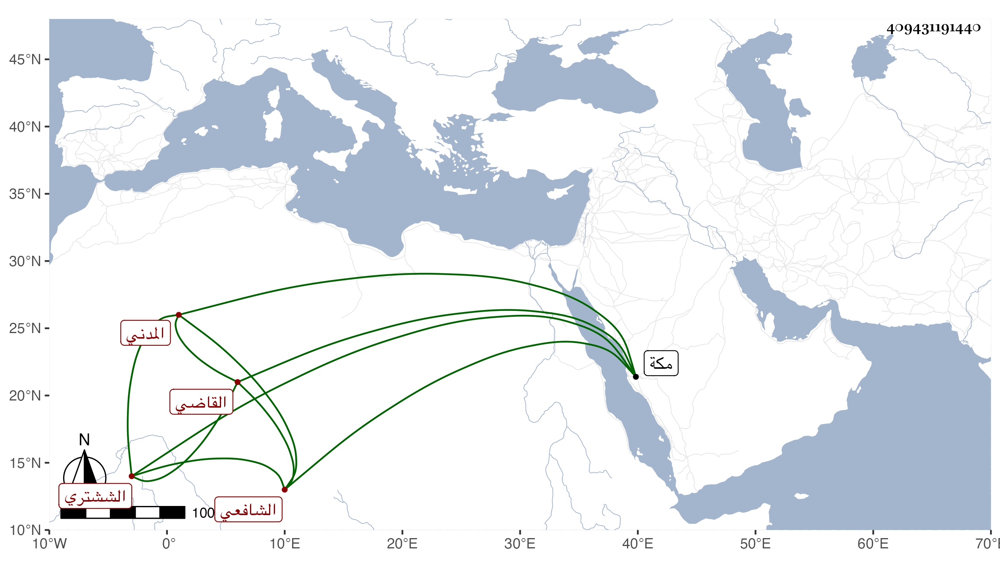

0902Sakhawi.DawLamic.ITO20230111-ara1.EIS1600.409431191440
Biography ID: 409431191440
489
أحمد بن محمد بن محمد بن أحمد الشهاب أبو العباس بن الشرف الششتري المدني الشافعي سبط ناصر الدين بن صالح القاضي وأخو الشمس محمد المقرئ ووالد محمد الآتي كل منهم . حفظ المنهاج والشاطبية والطيبة وقرأ القراءات على الشمس الكيلاني والسيد إبراهيم الطباطبي بل قرأ على الجمال الكازروني في الصحيح وأقام بمكة زيادة على عشرين سنة وأخذ بها عن حفيد اليافعي والشمس الزعيفريني وناب في خطابة بلده وإمامتها عن خاله فتح الدين بن صالح فمن بعده وكان خيرا رضيا مشاركا في الفقه والعربية أقرأ الطلبة ومات في المحرم سنة سبع وسبعين وقد زاد على الستين .
